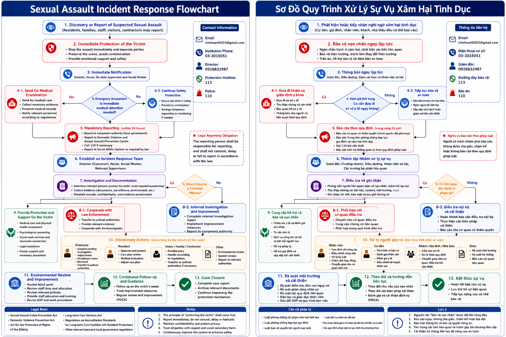
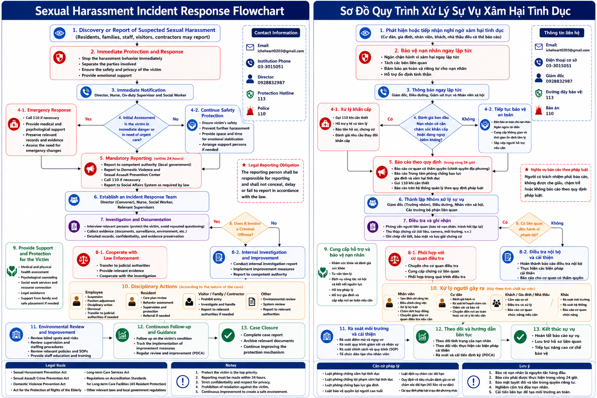

🛡️
安全優先
接獲疑似事件後立即停止不當行為、隔離當事人並確保安全。
本機構以被害人安全與尊嚴為最高原則，對任何形式的性侵害、性騷擾、報復或不當對待採取零容忍政策，立即保護、依法通報、全程保密。
每一位住民、家屬、員工與訪客，都有權在安全、尊重且無歧視的環境中接受服務與表達意見。
接獲疑似事件後立即停止不當行為、隔離當事人並確保安全。
尊重身體自主、性自主與個人隱私，避免重複詢問及二次傷害。
疑涉犯罪、傷害或保護需求時，依法聯絡主管機關、110或113。
申訴、通報、調查與醫療資料專卷保密，禁止任何不利待遇或報復。
不因當事人身分、認知能力、語言、性別、照護依賴或證據是否完整而拒絕受理。疑似事件即啟動保護與風險評估；如涉及刑事犯罪，不以內部協調、調解或和解取代法定通報與司法程序。
住民、家屬、員工、訪客、志工、實習生及委外人員均可提出通報或申訴。
發現疑似事件時先保護、立即通知、依法處理，不等待完整證據才採取行動。
任何人均可透過口頭、電話、書面或電子郵件提出。
停止不當行為、隔離相關人員並保護隱私。
通知主任、護理師、值班主管及社工。
評估傷勢、立即危險、情緒與醫療需求。
必要時撥110、113，安排送醫、驗傷與採證。
保密調查、支持陪伴、司法協助與轉介。
持續追蹤、環境檢討、PDCA改善及結案。
點選語言與事件類別查看完整流程；點擊流程圖即可全螢幕放大。


提供中文、英文與越南文版本，方便住民、家屬、員工及外籍工作人員查閱。
正式評鑑版，包含性侵害辨識、住民保護、通報、轉介、預防措施、聯絡資訊及PDCA。
下載 WordEnglish version covering prevention, immediate protection, investigation, reporting, referral and follow-up.
Download WordPhiên bản tiếng Việt gồm quy trình bảo vệ, báo cáo, điều tra, chuyển tuyến và cải tiến liên tục.
Tải xuống Word可以。住民、家屬、員工、訪客、志工、實習生、委外人員及第三人均可提出疑似事件通報，不需先備妥完整證據。
會。申訴、調查、通報、醫療及轉介資料均採專卷與權限控管，僅限依法或執行保護、調查所必要之人員使用。
有立即危險、傷害或疑涉刑事犯罪時請先撥110；有保護、諮詢或轉介需求可撥113，同時通知機構電話03-3015051或主任0928-832987。
機構依創傷知情與避免二次傷害原則處理，避免不必要的重複詢問，並安排可信任人員陪伴與專業轉介。
保護被害人、依法通報、全程保密，不拖延、不隱匿、不報復。
{kind=link}
{kind=link}
{kind=link}
{kind=link}